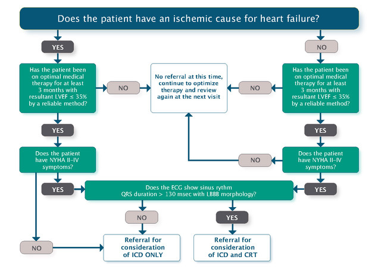

Device Therapy for Heart Failure
See also ICDs in the Post-ACS Period for specific guidance peri-AMI ICD indications.

ICD for Primary Prevention of SCD in HFrEF
Per the CCS HF Guidelines (2017):
- LVEF ≤35% and:
- 3+ months of OMT
- EF measured 1 month post-MI and 3 months post-revascularization otherwise
- NYHA II-IV symptoms (class IV patients should NOT get ICD if not predicted to have improvement or are not candidates for more advanced device therapy).
- NYHA I symptoms for ischemic heart disease and EF < 30%
CRT for Heart Failure
In select patients, CRT can reduce symptoms and mortality of HF. Can be combined with ICD Therapy (i.e. CRT-D) if the ICD criteria are independently met.
- Major Indications for CRT: NYHA II-IV symptoms on OMT >3 months; sinus rhythm; LBBB with QRS ≥130 ms; LVEF ≤35%.
- Consider CRT for the above but with:
- QRS >150 ms and not LBBB;
- presence of AFib;
- elderly age or frailty;
- chronic RV pacing with reduced EF
- If the QRS is narrow, then in this setting compared with ICD alone, CRT has not been associated with improvements in mortality or HF hospitalization, and there is a suggestion of increased harm with CRT in some studies.